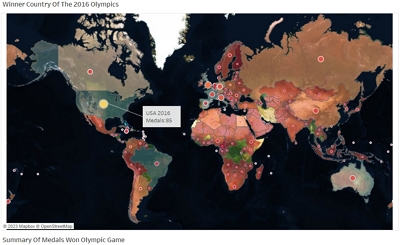
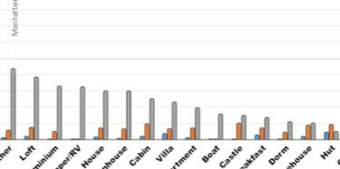

Hello, my name is Edgar and I work remotely as a Data Analyst. I graduated as a mechanical engineer but I have always been involved in the world of computers, working specifically with large volumes of data in the areas of Economics, Human Resources and Health statistics for the Cuban government.
I currently reside in the United States and have returned to the world of data at the Pathstream University of California from which I have graduated as a Data and Business Analyst. Obtaining a “Business Analytics Fundamentals” Certificate using Google Sheets as a fundamental tool for analysis, organization, cleaning, manipulation and preparation of data and Google Slides for creating presentations and communicating the results.
I have also completed and received a certificate for the “Data Visualization with Tableau” course. With which I can create incredible dashboards and impressive data stories and find the best answers to your business or company concerns based on your data. Make better decisions. Which means being more efficient by incurring less wasted time and unnecessary expenses.
My third course “SQL for Analytics” developed with SQL Workbench has allowed me to have new skills, so I am in the best conditions to generate SQL queries based on your data sets and to be able to provide you with the answers to your concerns in a more efficient way, fast and effective.
In parallel, I expanded my data analyst skills by studying “Python for Data Analyst” on kaggle.com for both Exploratory Data Analysis and data-based visualization of results.
Do you want to work with me? Contact me through the form.
To Cleaner, To Wrangler, Visualization And Analyze Raw Of Data Sets.
Cleaned, manipulated, visualized, and analyzed raw data using spreadsheet software (i.e. Google Sheets, Microsoft Excell) and BI data visualization tool (i.e. Tableau).
To Apply Descriptive Statistics And Exploratory Data Analysis To The Data Set.
To use Descriptive Statistics with spreadsheets. ( Google Sheets or Microsoft Excel) for apply and to conducte an exploratory data analysis (EDA) to provide key stakeholders with data-based evidence of user success characteristics to make the business case for additional funding.
To Create SQL Query For Get Information Insights Of Business.
To Create DDL and DML SQL queries from formal and ad hoc data requests to draw insights and make data-driven recommendations to support company growth.
To Create Incredible Story, Dashboard And Slides of Data Sets.
To Built a Tableau Story with interactive dashboards and dashboard objects to report insights from the comparative analysis completed in Tableau Desktop to technical and non-technical stakeholders. To create slides with Google Sheets or PowerPoint, for explain and present insights.
Data Analyst
I am specialized in Data Analysis. I perform cleaning, manipulation, visualization and analysis of data sets. Using spreadsheets (Excel, Google Sheets) as tools. In addition, I use Tableau to create interactive dashboards, stories and visualizations. Google Slides and PowerPoint to show valuable information on slides.
SQL Query
I provide and answer to several questions that you have about your data set using SQL queries that will give you the answer you are looking for and in conclusion better functioning of your business.

Training
I provide training in SQL query, Google Sheets, Excel, Google Slide, PowerPoint and Tableau software.
Data Entry
I do Data Entry service in spreadsheets and SQL databases for your business.
Medals The Olympics Games
Full study of olympics game to 2016. This data set collects information on the Olympic Games from their inception until 2016. An advanced analysis of the most outstanding countries and sports and athletes was carried out.
Crimes Los Angeles City

Crime_data_from_2020 update-10-10-2023. It is a huge set of data in an Excel file with the record of crimes that occur in the city of Los Angeles, California. This analysis was performed in the tableau visualization tool.
AirBnB NYC
Project Of Data Analysis using Google Sheets for the Data Set Of AirBnB NYC. Includes cleaning, preparation, analysis and visualization.